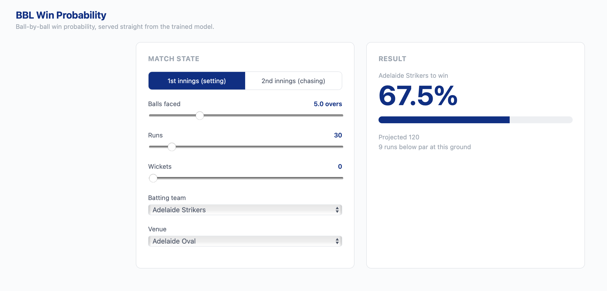
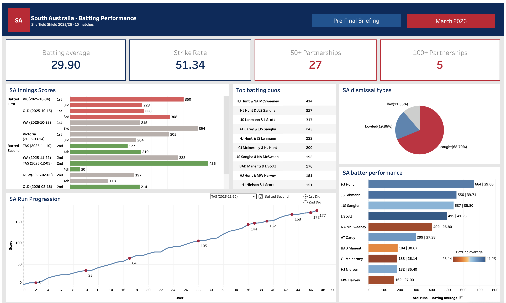
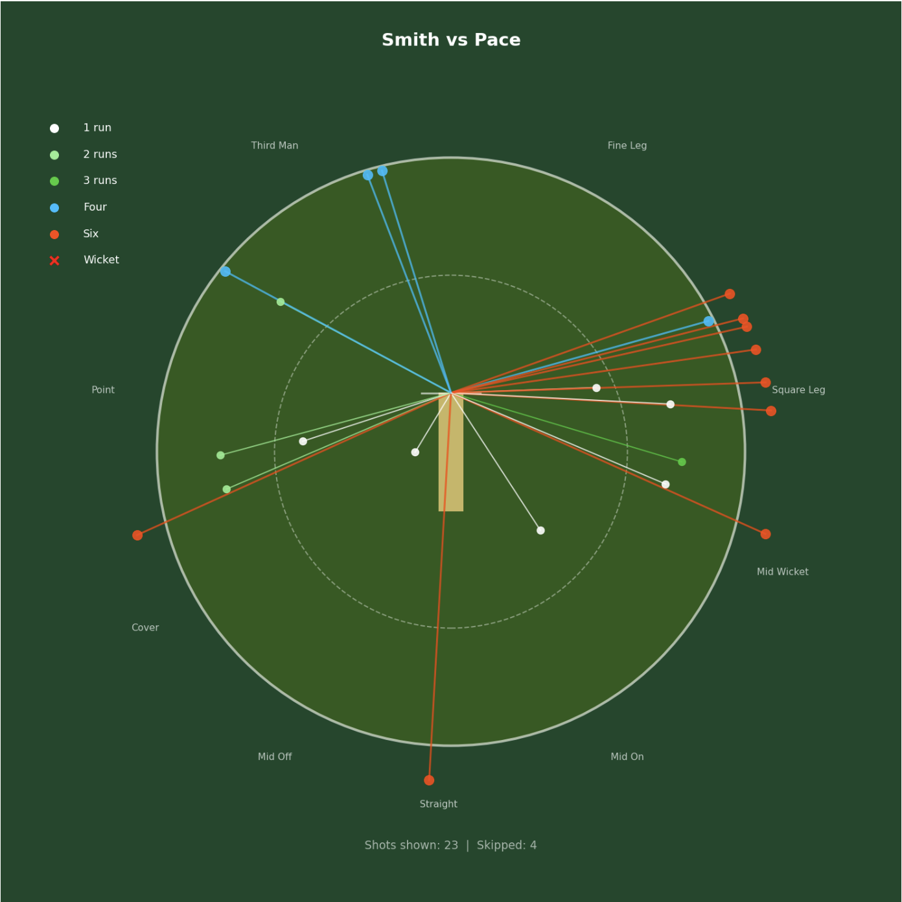

Kush Girap
I build models and dashboards that answer a specific question, and write up what they found.
Master of Business Analytics, Adelaide University. Looking for data and analytics roles in Adelaide.
01 / Win probability model — Live
A random train/test split reports 78% accuracy. The honest one reports 73%.
I ran a third experiment to find out why: half the gap is leakage, half is the cost of predicting future seasons. Ball-by-ball win probability for the Big Bash League, trained on 647 matches.

02 / Sheffield Shield season analysis 2025/26
Every South Australian win came batting second. Batting first, they won none of four.
An end-to-end pipeline and three Tableau dashboards covering South Australia's season, shared with a performance analyst at SACA.

03 / Post-match coaching report · Sixers vs Thunder
Thunder found the way to contain Steve Smith, and used it too late.
Smith struck at 341 against right-arm pace and at 100 against Sangha's leg spin. One of three tactical findings from a hand-coded match, written for a coach rather than an analyst.
